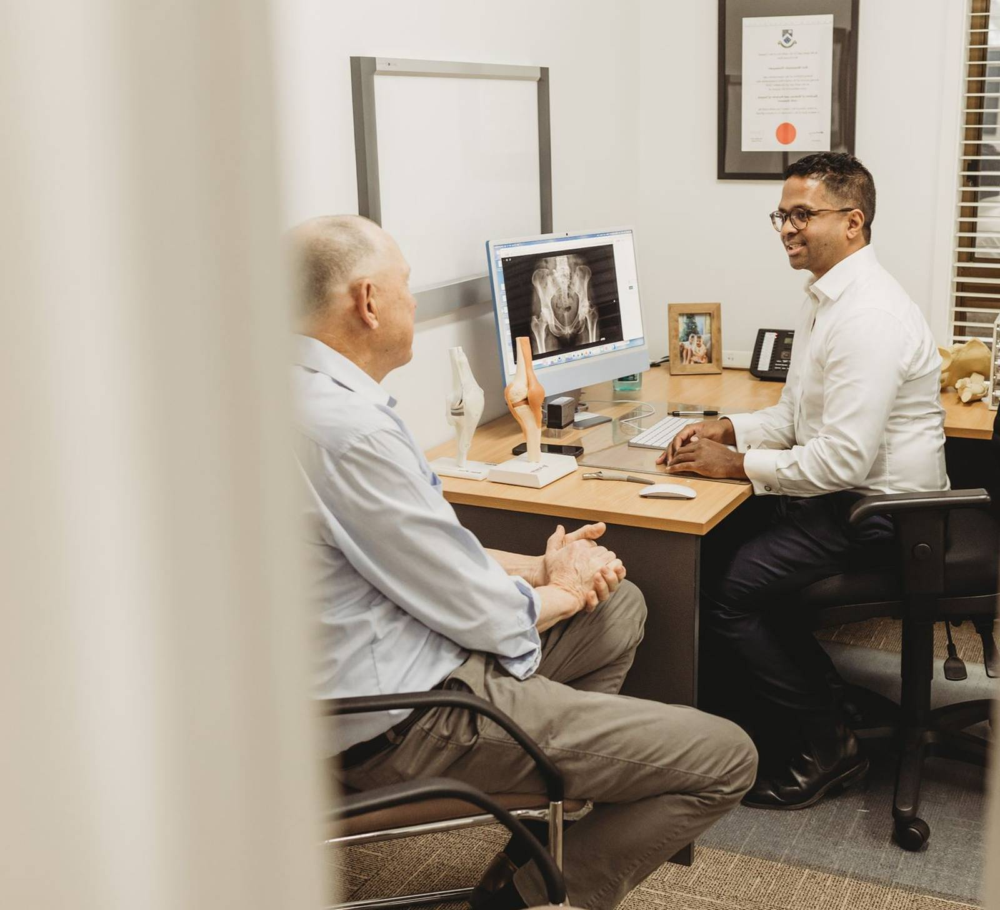

Dr Ravi Dissanayake
Dr Ravi Dissanayake is an Australian fellowship-trained orthopaedic surgeon, specialising in robotic assisted hip and knee replacement, revision hip and knee replacement, sports injuries (shoulder and knee), and trauma surgery. Ravi consults across south-east Melbourne and regional Victoria and operates in both public and private hospital settings.
Hip & knee care
Ravi consults across south-east Melbourne and regional Victoria and operates in both public and private hospital settings — if you're looking for an orthopaedic surgeon near Mount Waverley, Berwick, Warragul, Wonthaggi or Phillip Island, Ravi holds regular clinics in each area.
Robotic Assisted Hip & Knee Replacement
Joint replacement surgery using robotic-assisted technology for precise implant positioning.
Revision Hip & Knee Replacement
Surgery for patients whose existing hip or knee replacement requires revision.
Sports Injuries (Shoulder & Knee)
Assessment and treatment of sporting injuries, most commonly of the shoulder and knee, from ligament tears to cartilage damage.
Trauma Surgery
Emergency and planned surgical care for orthopaedic trauma and fractures.

Fellowship-trained orthopaedic surgeon
Dr Ravi Dissanayake is an Australian fellowship-trained orthopaedic surgeon. He consults across south-east Melbourne and regional Victoria and operates in both public and private hospital settings.
More About RaviWhat patients & referring GPs say
“I recently had ACL reconstruction surgery with Dr Ravi Dissanayake, and honestly the whole experience was super smooth. … The office is so responsive whenever you have a question, and what really stood out is that the doctor personally calls and checks in, which I've never had with other doctors. Highly recommend…”
“As a GP working in Melbourne I can definitely recommend Dr Ravi Dissanayake… He really is an exceptional surgeon and incredibly approachable. I have referred a number of patients to him and they have all come back feeling listened to, well informed and have had consistently good outcomes.”
Consulting locations
Ravi holds regular clinics at five locations across south-east Melbourne and regional Victoria — find the one nearest you:
- Mount Waverley
- Berwick
- Warragul
- Wonthaggi
- Phillip Island
Surgery at Waverley Private Hospital and St John of God Hospital, Berwick. Patients with private health insurance, without private cover, and WorkCover or TAC patients are all welcome.
Contact Us
Patients with private health insurance, without private cover, and WorkCover or TAC patients are welcome.